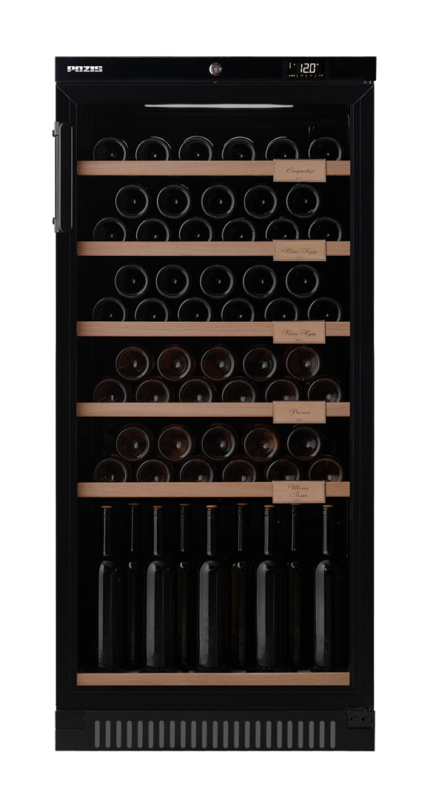

WineCellar.by
Винный шкаф MAUNFELD POZIS ШВ-52

Описание товара:
В линейке винных шкафов производителя POZIS представлен винный шкаф POZIS ШВ-52 в металлическом
корпусе.Предназначен для демонстрации и хранения при заданной температуре охлажденных вин.
Преимущества винного шкафа
- Высокоточная электронная система управления позволяет поддерживать температуру хранения вина на постоянном
уровне.
- Оптимальное качество воздуха в винных шкафах «POZIS-Wine» обеспечивают сменные фильтры из активированного
угля.
- Полка для вертикального хранения открытых бутылок и крепких напитков (Устанавливается в нижней части шкафа
по одной на каждую камеру. В моделях ШВ-39, ШВ-52, ШВ-120 - 1шт., в модели ШВ-78 - 2 шт.)
Доставка: бесплатная доставка по Могилёву или по Беларуси от 30 руб до квартиры.
Характеристики товара:
- Цвет: чёрный
- Количество бутылок: 64
- Количество полок: 6
- Полезный объём холодильной камеры: 228л
- Регулировка температуры: 5 — 18 °C
- Материал полок: дерево
- Дверь: стеклопакет
- Ширина/Глубина/Высова/Вес: 60 см/61 см/130 см/55 кг
Подробное описание товара:
Особенности и дополнительные элементы: полки 5 штук и одна подставка (дерево), вместимость до 64 бутылок вина,
микропроцессорный регулятор температуры со сверхчувствительным датчиком, возможность регулирования температуры
на внешней панели управления, световая индикация режима работы, электронный блок управления, дверь-стеклопакет с
тонированным покрытием против проникновения УФ-лучей с замком, автоматическое поддержание температуры в камере.
Оттенок цвета изделия на изображении может незначительно отличаться от оттенка цвета переданного товара, что
является следствием искажения цветопередачи монитора; Производитель имеет право без предварительного
уведомления вносить изменения в товар, которые не ухудшают его технические характеристики, а являются
результатом работ по усовершенствованию его конструкции или технологии производства.
Цена: 2006 BYN
© "Все права защищены"